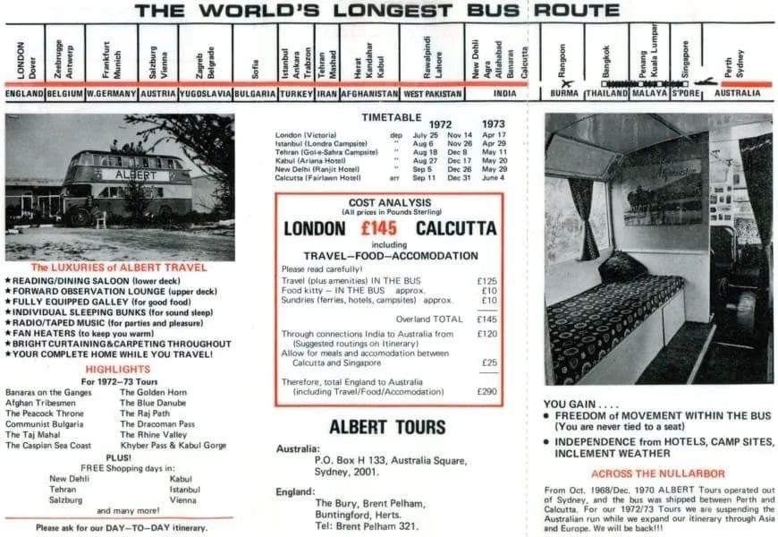

מסלול האוטובוס מלונדון ל... הודו 🚍
פורסם במקור ב LinkedIn
מסלול האוטובוס מלונדון ל... הודו 🚍
בשנות ה-60 הושק קו אוטובוס ייחודי שחיבר בין לונדון לכלכותה (הידועה כיום כקולקטה), ופעל במשך שני עשורים מדהימים עד שנת 1976.
🌏 המסע ארך כ-50 ימים וכלל מעבר דרך 16,000 ק"מ!
בדרך, הנוסעים נהנו מעצירות בערים כמו וינה, איסטנבול, טהראן ואפילו עצירה בטאג' מהאל המפורסם 🏰
האוטובוס כלל:
🛌 מיטות ללינה נוחה
🍳 מטבחון קטן לארוחות בדרך
🎟️ כרטיס שהתחיל ממחיר של 85 פאונד בלבד (כ-10 אלף שח בערכים של היום)
אבל לא רק תרבות והיסטוריה היו במסלול הזה. המסלול יצר הזדמנויות עסקיות מרתקות, כשיזמים ואנשי עסקים יכלו להתחבר עם שווקים מגוונים, לבנות קשרים בינלאומיים ולהבין תרבויות בצורה מעמיקה.
ב-1976 השירות הופסק בשל חוסר היציבות באזור (מהפכת איראן והמתח בין הודו לפקיסטן). אך לזמן קצר, האוטובוס הזה היווה גשר בין יבשות, תרבויות וחלומות.
היום, 60 שנה אחרי, בעידן שבו טיסה בין לונדון לדלהי אורכת שעות ספורות נשאר רק לדמיין - 🤔 הייתם מצטרפים למסע של 50 יום באוטובוס כזה?
